응용지질기사 (2013-06-02 기출문제)
1과목: 암석학 및 광물학
1. 저탁류에 의해 형성되는 저탁암(turbidite)의 특징적인 퇴적구조는?
- 사층리
- 점이층리
- 연흔
- 건열
(정답률: 55%)

2. 다음 중 가장 낮은 압력의 변성상(metamorphic facies)은?
- 각섬석상
- 청색편암상
- 혼펠스상
- 그래뉼라이트상
(정답률: 49%)
3. 다음 중 화성암이 용융상태의 마그마로부터 형성되었음을 가장 잘 나타내는 것은?
- 석영의 존재
- 유색 광물의 존재
- SiO2의 존재
- 결정질 조직의 존재
(정답률: 55%)
4. 셰일이 변성작용을 받을 때, 변성도가 증가함에 따라 생성되는 변성암의 순서로 옳은 것은?
- 천매암 - 슬레이트 - 편마암 - 편암
- 슬레이트 - 천매암 - 편암 - 편마암
- 편암 - 편마암 - 천매암 - 슬레이트
- 편마암 - 편암 - 슬레이트 - 천매암
(정답률: 89%)
5. 어떤 암석을 현미경으로 관찰하였더니 석영과 정장석이 전혀 없었다. 이와 같은 특징을 가지는 암석은?
- 화강암
- 감람암
- 섬록암
- 안산암
(정답률: 73%)
6. 다음 중 흑요암(obsidian)과 화학적 성분이 유사한 암석은?
- 유문암
- 현무암
- 대리암
- 규암
(정답률: 43%)
7. 다음 중 석회암을 구성하는 알로켐(allochem) 성분에 해당하지 않는 것은?
- 미크라이트
- 화석편
- 석회질 암편
- 어란석
(정답률: 53%)
8. 안산암은 주로 어느 곳에 집중되어 분포하는가?
- 대륙판내의 열개대
- 중앙해령
- 대륙판과 대륙판의 충돌대
- 섭입대
(정답률: 58%)
9. 변성암의 조직 중 입상변정질 조직에 해당하지 않는 것은?
- 모자이크 조직
- 입상 조직
- 몰타르 조직
- 구상변정질 조직
(정답률: 74%)
10. 퇴적물이 퇴적된 후에 일어나는 속성작용에 해당하지 않는 것은?
- 교결작용(cementation)
- 분별정출작용(fractional crystallization)
- 다짐작용(compaction)
- 재결정작용(recrystallization)
(정답률: 74%)
11. 다음 중 열발광성을 나타내는 대표적인 광물은?
- 우라니나이트
- 각섬석
- 형석
- 사문석
(정답률: 31%)
12. 다음 중 대칭의 3요소가 아닌 것은?
- 대칭축
- 대칭면
- 대칭심
- 대칭점
(정답률: 55%)
13. 다음 중 물질의 첨가와 제거가 동시에 일어나면서 광물이 생성되는 교대작용은?
- CaCO3 + Mg2+ + CO32- → CaMg(CO3)2
- CaCO3 + Fe2+ → FeCO3 + Ca2+
- CaCO3 + SiO2 → CaSiO3 + CO2
- CaCO3 + Zn2+ + S2- → ZnS + Ca2+ + CO2 + 1/2O2
(정답률: 61%)
14. 대칭의 기재법으로 허만-모긴 표기법(Hermann-Mauguin notation)이 국제적으로 통용되고 있다.
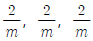
으로 표기되는 대칭에 대한 설명으로 옳지 않은 것은?- 2회축 사이에 대칭면이 존재한다.
- 서로 수직인 2회축이 3개 존재한다.
- 각 2회축에 수직방향으로 대칭면이 존재한다.
- 이 대칭은 사방정계에 속한다.
(정답률: 40%)
15. 석영(SiO2)은 생성환경에 따라 여러 형태로 산출된다. 대륙의 충돌대와 같은 고압환경에서 흔히 발견되는 석영의 변종은 무엇인가?
- α 석영
- 크리스토발라이트(cristobalite)
- 트리다이마이트(tridymite)
- 코에사이트(coesite)
(정답률: 62%)
16. X-선의 회절에서 격자면의 간격을 구하기 위한 브래그방정식은 어느 것인가? (단, λ : X선의 파장, θ : 회절각, d : 격자면의 간격, n : 배수(1, 2, 3, 4, 5 등))
- nλ = 2dsinθ
- nλ = dsinθ
- nλ = 2dsin2θ
- nλ = dsin2θ
(정답률: 59%)
17. 다음 중 천이가 일어날 때 다량의 에너지를 필요로 하며 비가역적이고 반응이 느리게 일어나는 천이형은?
- 변이형 천이
- 재결합형 천이
- 질서-무질서형 천이
- 비교란형 천이
(정답률: 62%)
18. 어떤 금속원자들은 음이온과 쉽게 반응한다. 이런 금속원자들에 대한 설명으로 옳은 것은?
- 이들은 강한 환원제이다.
- 대체로 쉽게 부식되지 않는다.
- 대체로 귀금속들이다.
- 자연계에서 원소상태로 산출된다.
(정답률: 64%)
19. 다음 중 격자결함(결손격자) 고용체로 된 광물은?
- 황철석
- 섬아연석
- 방연석
- 자황철석
(정답률: 45%)
20. 물(H2O)을 이루는 산소와 수소 원자들이 이루는 화학적 결합의 종류는 어떤 것인가?
- 금속결합
- 공유결합
- 잔류결합
- 이온결합
(정답률: 79%)
2과목: 구조지질학
21. 다음 중 압축 메카니즘에 의하여 지진이 발생하는 곳은?
- 해구(trench)
- 해령(oceanic ridge)
- 변환단층(transform fault)
- 순상지(shield)
(정답률: 81%)
22. 다음 중 대륙충돌에 의해서 만들어진 산맥이 아닌 것은?
- 캐스케이드 산맥
- 우랄 산맥
- 애팔래치아 산맥
- 히말라야 산맥
(정답률: 70%)
23. 곡류하는 하천에서 최심하상선(thalweg)을 따라 활발하게 발생하는 측방 침식에 의해 형성된 사면은 무엇인가?
- 활주사면(slip-off slope)
- 자유사면(free-face slope)
- 상승적 사면(waxing slope)
- 공격사면(undercut slope)
(정답률: 52%)
24. "현재는 과거를 아는 열쇠이다.“ 는 지사학 5대 법칙 중 무엇에 해당하는가?
- 지층누중의 법칙
- 동물군 천이의 법칙
- 동일과정의 법칙
- 부정합의 법칙
(정답률: 80%)
25. 다음 지질도에서 A-B선에 따라 단면도를 작성하려 한다. X 지점의 위경사(apparent dip)는?
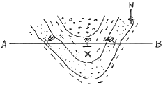
- 수직
- 70° N
- 60° NE
- 수평
(정답률: 66%)
26. A, B, C 세 개의 지진계에 기록된 S-P 시간 간격이 각각 2분, 4분, 3분일 때, 주어진 이동시간(Travel-time) 곡선표로부터 계산된 진앙으로부터 각 지진계까지의 거리에 대한 설명 중 옳은 것은?
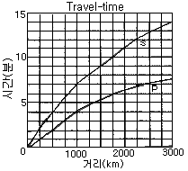
- 진앙으로부터 지진계 A까지의 거리는 250km이다.
- 진앙으로부터 지진계 B까지의 거리는 2250km이다.
- 진앙으로부터 지진계 C까지의 거리는 1000km이다.
- 지진계 C가 진앙으로부터 가장 멀리 떨어져 있다.
(정답률: 66%)
27. 전 세계적으로 지구역사상 최대 규모의 생물 멸종현상이 일어난 시기는?
- 고생대 말
- 중생대 말
- 신생대 말
- 선캄브리아누대 말
(정답률: 75%)
28. 습곡된 지층의 단면에서 수평선을 기준으로 습곡된 면에서 가장 높은 곳에 위치한 점을 무엇이라 하는가?
- 힌지(hinge)
- 골(trough)
- 날개(wing)
- 정부(crest)
(정답률: 72%)
29. 다음 중 영월형 조선 누층군에 해당하지 않는 것은?
- 화절층
- 문곡층
- 영흥층
- 삼방산층
(정답률: 42%)
30. 다음과 같이 4개의 지층이 전단작용에 의해 전단변형률(shear strain)이 발생하였다. 전체 지층의 평균 전단변형률 값은 얼마인가?
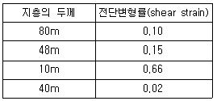
- 0.0⑤
- 0.13
- 0.66
- 0.93
(정답률: 61%)
31. 다음 중 분류상의 특징이 다른 하나는?
- 습곡축
- 광물신장구조
- 멀리온(mullion)
- 파랑벽개(crenulation cleavage)
(정답률: 44%)
32. 확장운동이 우세한 지역에서는 일반적으로 분지가 만들어진다. 다음 중 주향이동단층(strike-slip fault)과 관련되어 많이 만들어지는 분지의 형태는?
- 배호 분지(back arc basin)
- 전지형 분지(foreland basin)
- 당겨열림형 분지(pull-apart basin)
- 반지구형 분지(half-graben basin)
(정답률: 57%)
33. 다음 변형지질구조 중 연성변형에 의해 주로 발달하는 것은?
- 절리
- 단층
- 습곡
- 단열
(정답률: 60%)
34. 다음 중 해양지각에서 대륙지각쪽으로 갈수록 증가하는 성분은?
- Ca
- Al
- K
- Mg
(정답률: 60%)
35. 다음 중 지진과 지진파에 대한 설명으로 옳은 것은?
- 암석의 밀도가 증가하면 지진파의 속도도 증가한다.
- 대륙의 단층을 따라 발생한 지진은 지진해일을 일으킨다.
- 지진파 중 S파의 속도가 가장 느리다.
- 지진해일의 진행속도는 시간당 300km를 넘지 못한다.
(정답률: 69%)
36. 다음 중 호그백(Hogback)에 대한 설명으로 옳은 것은?
- 지층의 경사가 완만한 지역에서 이와 평행한 길고 완만한 경사면의 반대쪽에 발달하는 급경사면
- 지층의 경사가 급한 곳에서 형성되는 양사면이 가파르고 좁은 산봉
- 두 개 이상의 나란한 정단층에 의해서 형성된 단층지괴의 구조
- 수직단층에 의해 형성된 길고 좁은 단층절벽
(정답률: 57%)
37. 최후 간빙기에 형성된 것으로 밝혀진 해안단구가 포항 호미곶에서는 해발 44m에서, 울산 간절곶에서는 해발 22m에서 각각 확인되었다면, 이 두 지점간의 융기율 차이는 얼마인가? (단, 최후 간빙기는 12만 5천년전이고, 이때의 해수면은 현재보다 4m아래에 있었다.)
- 0.18mm/year
- 0.23mm/year
- 0.28mm/year
- 0.33mm/year
(정답률: 65%)
38. 지구 내부의 구조에 대한 설명으로 옳은 것은?
- 지각은 대륙지각과 해양지각으로 분류할 수 있고, 대륙지각은 해양지각에 비해 밀도가 높다.
- 지구 내부 중 맨틀이 차지하는 부피가 가장 크다.
- 지구의 외핵과 내핵은 모두 액체 상태로 존재한다.
- 암석권은 지각으로만 이루어져 있다.
(정답률: 77%)
39. 다음 중 해령(oceanic ridge)과 관련이 없는 것은?
- 정단층
- 안산암질 마그마
- 인장변형
- 화산활동
(정답률: 58%)
40. 전단절리(Shear joint)의 특징으로 가장 적당한 것은?
- 깃털(plume) 구조가 발달한다.
- 절리면이 비교적 매끈하다.
- 공액상으로 발달하지 않는다.
- 동심원상 쪼개짐이 보인다.
(정답률: 47%)
3과목: 탐사공학
41. 다음 중 방사능 탐사에서 사용하는 기기는?
- 그레비미터(gravimeter)
- 신틸레이션 미터(scintillation meter)
- 클라우드 챔버(cloud chamber)
- 알파컵(α-cup)
(정답률: 77%)
42. 지하수탐사를 위한 물리검층 시 가장 기본적으로 이용되는 검층법이 아닌 것은?
- 자연전위 검층
- 전기비저항 검층
- 자력 검층
- 감마선 검층
(정답률: 57%)
43. 굴절법 탄성파 탐사방법이 개발된 초기에 유전 지역에서 심도가 얕은 암염돔(salt dome)을 조사하는데 매우 유용하게 사용되었으며, 짧은 시간 내에 비교적 광범위한 지역을 손쉽게 조사할 수 있기 때문에 새로운 지역에 대한 예비 탐사에도 효과적으로 이용되는 탐사 방법은?
- 팬터밍(phantoming)
- 인라인(in-line) 탐사법
- 측선발파법(profile shooting)
- 선형발파법(fan-shooting)
(정답률: 47%)
44. 측점과 기준면 사이의 고도차가 20m이고 그 사이에 존재하는 물질의 밀도가 2.0g/cm3일 경우 부게 보정값은?
- 0.02096mgal
- 0.16772mgal
- 0.4193mgal
- 1.6772mgal
(정답률: 50%)
45. 중력탐사는 암석의 밀도변화에 민감하다. 암석의 밀도에 영향을 미치는 지질학적 요인에 대한 설명으로 옳지 않은 것은?
- 일반적으로 화성암은 퇴적암보다 밀도가 작다.
- 변성암은 산성도가 감소할수록, 변성정도가 증가할수록 밀도가 증가한다.
- 퇴적암의 밀도에 영향을 주는 인자는 조성, 교결, 연령, 깊이, 공극률, 공극유체 등이다.
- 화성암은 실리카 함량이 감소하면 밀도가 증가하므로 염기성 화성암은 산성 화성암보다 밀도가 크다.
(정답률: 58%)
46. 다음은 지진파 초동분포양상을 연구하기 위한 발진기구(focal mechanism)이다. 가장 적합하지 않는 것은?
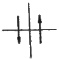
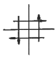
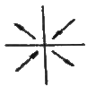
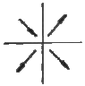
(정답률: 42%)
47. 결정질 암석에서 P파 전파속도 Vp와 S파 전파속도 Vs와의 일반적인 관계로 옳은 것은?
- Vp≅Vs
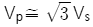
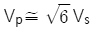
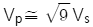
(정답률: 69%)
48. 원소들이 자연물질에 분포되는 정도는 그 원소의 지구화학적 환경에 따른 이동도(mobility)에 좌우된다. 다음 중 자연상태(pH 5~8)에서, 비이동성 원소에 속하는 것은?
- 마그네슘(Mg)
- 브롬(Br)
- 알루미늄(Al)
- 헬륨(He)
(정답률: 47%)
49. 다음 중 자력탐사의 활용성이 가장 작은 분야는?
- 고고학적 유적지와 유물의 탐사
- 매립지 탐사
- 폐기된 시추공의 위치 조사
- 기반암과 풍화대의 경계 조사
(정답률: 34%)
50. 지오레이다 반사법 탐사 시 결정해야 할 탐사변수와 그에 대한 설명으로 옳지 않은 것은?
- 중심 주파수 - 중심주파수가 높을수록 분해능도 높아지고 가탐심도도 커진다.
- 샘플링 간격 - 왜곡 없이 높은 주파수의 자료를 얻기 위해서는 샘플링 간격이 충분히 작아야 한다.
- 측점 간격 - 공간적 알리아싱(aliasing)을 피하기 위하여 측정 간격은 나이키스트(Nyquist) 샘플링 간격보다 작아야 한다.
- 송수신 간격 - 레이다 탐사기기는 대상체에 따라 송수신 간격을 조절하는 것이 효과적이다.
(정답률: 50%)
51. 점 반사원(point reflector)이 존재할 경우 GPR 탐사단면상에 나타나는 반사 양상은? (단, 구조보정을 거치지 않은 경우)
- 정확하게 점 반사원의 위치에서만 반사 기록이 나타난다.
- 점 반사원을 중심으로 포물선 형태의 회절 양상을 보인다.
- 점 반사원을 중심으로 원형의 반사 양상을 보인다.
- 점 반사원은 GPR 단면상에 직선으로 나타난다.
(정답률: 69%)
52. 유도분극(IP)탐사에서 측정하는 유도분극(IP)현상에 관한 설명으로 옳지 않은 것은?
- 유도분극이란 전기장이 가해졌을 때 지하 구성 물질이 전기화학적 작용으로 분극되는 현상이다.
- 유도분극현상은 물리화학분야의 과전압효과와 유사하다.
- 유도분극현상을 일으키는 원인은 크게 막분극과 전극분극으로 설명할 수 있다.
- 막분극에 의한 유도분극효과는 전도성 광물의 전도성 입자수에 좌우된다.
(정답률: 38%)
53. 다음 중 햄머 도표(Hammer chart)를 이용하여 실시하는 중력보정은?
- 조석보정
- 지형보정
- 위도보정
- 에트뵈스보정
(정답률: 52%)
54. 다음 중 육상에서 폭발형이나 임펄스형 에너지원의 대안으로 진동판을 사용하여 파형을 조절하여 발생시키는 탄성파 에너지원은?
- 바이브로사이스(Vibroseis)
- 중력추(Drop weight)
- 다이너마이트(Dynamite)
- 스파커(Sparker)
(정답률: 75%)
55. 두 지점 간을 전파하는 탄성파는 최단 주시를 갖는 파선경로를 따라 전파된다는 원리 또는 법칙을 무엇이라 하는가?
- 페르마의 원리
- 호이겐스의 원리
- 스넬의 법칙
- 패러데이 법칙
(정답률: 56%)
56. 지열탐사에 있어 지열광상의 부존을 확인할 수 있는 매우 유망한 물리탐사 방법이 아닌 것은?
- MT 법
- P-파 지연법
- Curie 점법
- GPR 법
(정답률: 55%)
57. 시추공내 음파검층으로부터 P파와 S파의 속도를 구하였다. 이때 지반의 동탄성계수를 구하고자 할 경우 필요한 검층법은?
- 자연전위 검층
- 중성자 검층
- 밀도 검층
- 자연감마 검층
(정답률: 56%)
58. 굴절법 탄성파탐사에서 굴절파가 직접파를 앞질러 처음으로 초동으로 나타나는 지점과 음원과의 거리를 교차거리라 한다. 수평 2층 구조에서 제1층의 탄성파 속도가 1km/sec, 제2층의 속도가 2km/sec, 교차거리가 20m일 경우 제1층의 두께는 얼마인가?
- 5.77m
- 8.66m
- 10.25m
- 11.18m
(정답률: 30%)
59. 화학원소의 지구화학적 분류에서 쉽게 이온화되어 이온결합의 경향이 높은 원소들이 주로 속하는 분류는?
- 친철(siderophile) 원소
- 친동(chalcophile) 원소
- 친석(lithophile) 원소
- 친기(atmophile) 원소
(정답률: 43%)
60. 수평적인 층서구조(layered earth)를 가진 지하 매질에 대해 전기비저항탐사를 수행할 때 수직 분해능(vertical resolution)이 가장 높은 전극 배열법은?
- 웨너(Wenner) 배열
- 쌍극자(dipole-dipole) 배열
- 슐럼버저(Schlumberger) 배열
- 정사각형(square) 배열
(정답률: 34%)
4과목: 지질공학
61. 직경이 5.2cm, 길이가 12cm인 코아시료에 40MPa의 압축응력을 축방향으로 가할 때 시료의 길이가 0.01cm 축소되었다. 이 시료의 탄성계수로 옳은 것은?
- 33.3GPa
- 48.0GPa
- 64.1GPa
- 76.9GPa
(정답률: 50%)
62. 숏크리트는 터널굴착 시 지보재로서 중요한 요소이다. 숏크리트의 합리적인 시공을 위하여 유의해야 할 사항 중 가장 관련이 적은 것은?
- 빔(beam)거푸집의 사용성
- 뿜어 붙이기 각도와 거리
- 뿜어 붙이기 압력
- 리바운드율
(정답률: 63%)
63. 흙속의 어느 한 면에 작용하는 수직응력(σ)이 15t/m2, 공극수압(u)이 5t/m2, 점착력(c)이 7t/m2, 내부 마찰각(Φ)이 25°일 때, 파괴가 발생했다면 이 면에서의 전단강도(τ)는 얼마인가?
- 10.55t/m2
- 11.66t/m2
- 12.55t/m2
- 13.66t/m2
(정답률: 49%)
64. 암반분류 방법 중 RMR과 Q 분류법에 대한 설명으로 옳지 않은 것은?
- 암질지수는 두 방법 모두에서 평가요소중의 하나이다.
- RMR에서는 암석의 일축압축강도 요소가 평가되며, Q 분류법에서는 암석의 전단강도 관련 요소가 평가된다.
- Q 분류법에서의 단점은 응력조건을 고려할 수 없다는 것이다.
- RMR에서 불연속면의 방향성은 기본점수에 포함되지 않는다.
(정답률: 47%)
65. 다음 중 산사태 및 사면붕괴 문제 해결을 위한 공학적 설계에서 가장 중요하게 다루어져야 하는 것은?
- 일축압축강도
- 탄성계수
- 마찰각
- 탄성파 속도
(정답률: 75%)
66. 지하수로 포화된 느슨한 모래지반이 지진에 의한 진동과 충격을 받으면 다짐작용(compaction)으로 과포화 상태에 도달하게 되어 액체와 같은 상태로 변하게 되는데 이러한 현상을 액상화 현상(liquefaction)이라고 한다. 다음 중 액상화 현상을 방지하는 방법으로 옳지 않은 것은?
- 배수를 하여 지하수위를 낮춘다.
- 느슨한 모래층을 다진다.
- 시멘트 등을 이용하여 모래를 고결시킨다.
- 자연간극비를 한계간극비보다 더 크게 한다.
(정답률: 88%)
67. 포화된 암석으로부터 중력으로 인해 배수되는 물체적의 비율을 무엇이라 하는가?
- 비보유율
- 비산출율
- 비저류율
- 투수율
(정답률: 76%)
68. 다음 중 암석시료의 일축압축시험을 통하여 구할 수 없는 것은?
- 일축압축강도
- 포아송비
- 내부마찰각
- 탄성계수
(정답률: 68%)
69. 암반 사면의 파괴 유형과 그 특성의 설명으로 옳은 것은?
- 원호파괴 - 절리 발달 빈도가 높고 풍화가 진행된 파쇄암반에서 발생한다.
- 쐐기파괴 - 비교적 연장이 불량한 절리에 의해 진행되며, 단일한 파괴면을 갖는다.
- 전도파괴 - 사면의 경사방향과 동일한 방향의 고각의 절리군이 중요한 역할을 한다.
- 평면파괴 - 미끄러짐이 발생하는 면의 주향과 사면의 주향이 큰 각을 이룬다.
(정답률: 53%)
70. 연약지반의 개량공법 중 주로 점성토 지반의 압밀촉진을 위하여 채택되는 공법으로 옳지 않은 것은?
- 바이브로 플로테이션 공법
- 샌드 드레인 공법
- 프리 로딩 공법
- 팩 드레인 공법
(정답률: 50%)
71. 유선망(flow net)의 특성에 대한 설명으로 옳지 않은 것은?
- 인접한 2개의 유선 사이를 흐르는 침투수량은 서로 같다.
- 투수속도 및 수두경사는 유선망의 폭에 비례한다.
- 인접한 2개의 등수두선 사이의 손실수두는 서로 같다.
- 흙이 균질할 때 흙속의 침투수는 수두경사가 가장 급한 방향으로 흐른다.
(정답률: 76%)
72. 스캔라인(Scan-line) 조사기법에 대한 설명으로 옳은 것은?
- 일정한 면적부분에 나타난 불연속면을 조사한다.
- 조사선을 따라 교차되는 불연속면을 조사한다.
- 전체 불연속면을 측정하는 방법으로 시간이 많이 걸리나 가장 정확하다.
- 분석 시 항공사진이 필요하다.
(정답률: 64%)
73. 절리면 전단시험시 시험편의 전단거동특성에 대한 설명으로 옳지 않은 것은?
- 절리면의 거칠기 정도가 클수록 전단강도는 커진다.
- 절리면이 분리되어 있는 경우 점착력은 0에 가깝다.
- 절리면에 작용하는 수직응력이 클수록 전단강도는 작아진다.
- 절리면의 최대마찰각은 보통 잔류마찰각보다 크다.
(정답률: 61%)
74. Barton의 불연속면 전단강도 비선형모델에 영향을 미치는 요소가 아닌 것은?
- 수직응력(σn)
- 불연속면의 압축강도(JCS)
- 불연속면의 거칠기계수(JRC)
- 지질강도지수(GSI)
(정답률: 80%)
75. 암석시료의 모든 방향에서 동일한 크기의 압력이 작용하는 정수압(hydrostatic compression)상태를 Mohr원으로 바르게 표현한 것은?
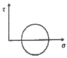
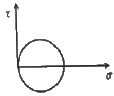
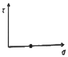
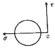
(정답률: 73%)
76. 시추주상도에 일반적으로 기재되는 항목이 아닌 것은?
- 암석의 종류
- 풍화상태
- 시추작업위치
- 암반등급
(정답률: 63%)
77. 부피가 100cm3인 흙을 분석한 결과, 흙입자의 부피는 60cm3, 물의 부피는 25cm3, 공기의 부피는 15cm3이다. 이 흙의 공극비는 얼마인가?
- 0.25
- 0.42
- 0.60
- 0.67
(정답률: 49%)
78. 흙의 연경도(consistency)에 대한 설명으로 옳지 않은 것은?
- 연경도는 함수비에 따라 소성상태나 고체상태 등을 보이는 흙의 특성을 의미한다.
- 소성한계는 소성영역 내에 있어서 최대 함수비이다.
- 연경도는 주로 점착성이 있는 세립토에서 중요한 의미를 갖는다.
- 수축한계는 고체상태의 최대 함수비이다.
(정답률: 59%)
79. 다음 중 피압대수층의 특성에 해당되지 않는 것은?
- 대수층의 상부경계는 수압이 0인 자유수면을 이룬다.
- 기반암과 같은 불투수층이 대수층의 하부경계가 된다.
- 포화대의 상, 하부가 불투수층으로 피복되어 심한압력의 구속상태에 있다.
- 암반 내의 파쇄대는 피압대수층을 형성할 수 없다.
(정답률: 60%)
80. 다음 중 초기 지중응력을 측정하는 방법에 해당하지 않는 것은?
- 플랫잭법
- 수압파쇄시험법
- 응력해방법
- 공내재하시험법
(정답률: 43%)
5과목: 광상학
81. 표성부화광상이 이루어지는데 선행조건이 되는 것은?
- 충진작용
- 교대작용
- 열변성작용
- 산화작용
(정답률: 65%)
82. 우리나라의 연-아연 광상을 성인에 따라 분류할 때 대규모 광체가 산출되는 광상은?
- 정마그마광상
- 페그마타이트광상
- 풍화잔류광상
- 접촉교대광상
(정답률: 40%)
83. 우리나라 경상남도 하동 및 산청 지역 고령토 광상의 주요구성 광물은?
- 나크라이트(nacrite)
- 딕카이트(dickite)
- 카올리나이트(kaolinite)
- 할로이사이트(halloysite)
(정답률: 67%)
84. 탄소 동위원소를 측정하여 광화용액의 기원을 알고자 할 때 사용하는 표준물질은?
- SMOW(Standard Mean Ocean Water)
- CDT(Canyon Diablo Troilite)
- PDB(Pee Dee Belemnite)
- CML(California Mother Lode)
(정답률: 48%)
85. 다음 중 우리나라 신생대 제3기 퇴적암층 내에 부존하는 석탄자원은?
- 토탄
- 갈탄
- 역청탄
- 무연탄
(정답률: 58%)
86. 우리나라에서 산출되는 납석광상의 일반적인 성인으로 옳은 것은?
- 풍화작용
- 속성작용
- 화학적 침전작용
- 열수변질작용
(정답률: 57%)
87. 다음에서 설명하는 금속은 무엇인가?
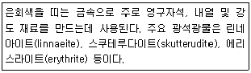
- 니켈
- 안티모니
- 코발트
- 주석
(정답률: 32%)
88. 배호분지(back arc basin)에 가장 일반적으로 형성되는 광상은?
- 마그마기원 크롬철석광상
- 망간단괴광상
- 접촉교대광상
- 화산성 괴상황화물광상
(정답률: 41%)
89. 다음 중 반암형 광상에 대한 설명으로 옳지 않은 것은?
- 반상화강암체의 정상부 또는 주변에서 유용광물을 광염 또는 망상으로 산출하는 저품위 대규모 광상이다.
- 화성광상의 생성단계로는 기성광상에 해당한다.
- 반암형 광상의 주요 성분은 동, 몰리브덴 등 이다.
- 반암형 광상은 지각의 소멸대의 조산대에서 특징적으로 생성되었다.
(정답률: 43%)
90. 일본에 분포하는 흑광형 광상(kuroko deposits)에 대한 설명으로 옳지 않은 것은?
- 열수용액이 주입되어 형성된 맥상 광상이다.
- 해저 화산활동에 의해 형성된 광상이다.
- 괴상의 황화광물을 포함한 치밀한 혼합광석으로 구성되어 있다.
- 일반적으로 섭입대 주변 유문암질 화산암에 수반된다.
(정답률: 45%)
91. 두 개의 광맥이 동일한 주향을 가지며, 서로 수직으로 교차하여 이루는 광맥을 무엇이라 하는가?
- 단성맥(simple vein)
- 복성맥(complex vein)
- 콘주게이트(conjugate)
- 파이프(pipe)
(정답률: 52%)
92. 우리나라의 광상 중 선캠브리아기 화성광상으로 염기성~초염기성암을 모암으로 하는 마그마분화철광상에 속하는 광상은?
- 양양철광상
- 울산철광상
- 포천철광상
- 신예미광상
(정답률: 47%)
93. 다음 중 우리나라의 금 · 은 광상의 형성과 가장 밀접한 관계가 있는 것은?
- 신생대 제3기 화산암류
- 조선누층군 석회암
- 쥐라기 대보화강암
- 시생대 화강편마암
(정답률: 62%)
94. 마그마수의 조성(성분)에 영향을 미치는 주요 요소가 아닌 것은?
- 모암과의 반응
- 마그마의 형태와 정출과정
- 마그마에서 분리되는 과정과 이후의 온도, 압력
- 마그마수가 이동할 때 혼합되었을 광화가스의 종류
(정답률: 59%)
95. 다음 중 벤토나이트의 주 구성광물은?
- 몬모릴로나이트
- 일라이트
- 스멕타이트
- 다이아스포아
(정답률: 70%)
96. 다음 중 기성광상에서의 모암 변질작용에 속하지 않은 것은?
- 견운모화작용
- 전기석화작용
- 황옥화작용
- 주석화작용
(정답률: 60%)
97. 우리나라 석회암의 주 분포지인 삼척, 영월, 단양 지역의 석회암은 언제 퇴적된 것인가?
- 시생대초
- 고생대초
- 중생대초
- 신생대초
(정답률: 67%)
98. 광물 결정내의 유체포유물을 이용해서 얻을 수 있는 정보로서 옳지 않은 것은?
- 광체의 규모
- 광상의 생성온도
- 광액의 염농도
- 광액의 화학성분
(정답률: 61%)
99. 다음 중 상동 중석광상의 유형은?
- 스카른형
- 열수교대형
- 열수충진형
- 정마그마형
(정답률: 53%)
100. 다음 중 화학적 침전에 의해 생성된 퇴적광상에 해당하는 것은?
- 보크사이트 광상
- 라테라이트 니켈 광상
- 층상 철광상
- 사금 광상
(정답률: 32%)
점이층리는 입자들이 흐름 방향에 수직하게 적층되는 구조로, 흐름이 강하고 입자들이 빠르게 적층되는 경우에 형성됩니다. 이는 저탁류가 강하게 흐르는 바다 바닥에서 형성되는 경우가 많습니다. 따라서 점이층리는 저탁류에 의해 형성되는 퇴적암의 대표적인 구조 중 하나입니다.